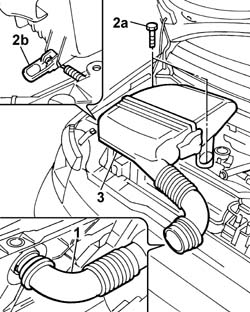
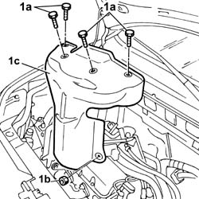

1072C44 exhaust manifold heat shield on bulkhead - r+r
- Path
- Procedures > 10 ENGINE UNIT > 1072 INLET AND EXHAUST MANIFOLDS > 1072C exhaust manifolds > 1072C44 exhaust manifold heat shield on bulkhead - r+r
- Kind
- repair procedure (removal / refitting; the operation number is the code)
- Applies to
- engines: 1.1, 1.2 8v; all production periods
- Interactive page
- https://sloeber94.github.io/elrnDB-fPnd/en/#/2752508
Applies to: engines: 1.1; all production periods
 Removing
Removing
 Refitting
RefittingPlace the car on a lift.
1. Release the cold air intake hose from the housing.
2. Undo the fixing bolts (2a) and release the fastening clip (2b).
3. Remove the air filter casing complete with hose.

Applies to: engines: 1.2 8v; all production periods
Removing
RefittingPlace the car on a lift.
1. Release the cold air intake air hose from the housing.
2. Undo the fixing bolts (2a) and release the fastening clip (2b).
3. Remove the air filter casing complete with hose.
Applies to: engines: 1.1; all production periods
1. Undo the fixing bolts (1a) and the nuts (1b) and remove the exhaust manifold heat shield (1c).

Applies to: engines: 1.2 8v; all production periods
1. Undo the fixing bolts (1a) and nuts (1b) and remove the exhaust manifold heat shield (1c).
Applies to: engines: 1.1; all production periods
Refitting
RemovingFit the exhaust manifold heat shield and tighten the fixing bolts and nuts.
Fit the air filter complete with cold air intake hose in place and tighten the fixing bolts and close the clip fastening the air filter casing.
Remove the vehicle from the ramp.
Applies to: engines: 1.2 8v; all production periods
Refitting
RemovingFit the exhaust manifold heat shield and tighten the fixing bolts and nuts.
Fit the air filter complete with cold air intake hose in place and tighten the fixing bolts and close the air filter casing fastening clip.
Remove the vehicle from the ramp.
Topics that link to this page (21)
- 1016C10 SINGLE CYLINDER HEAD, REMOVED - OVERHAUL
- 1016C11 SINGLE CYLINDER HEAD-R R GASKET FOR VERSIONS WITH AIR CONDITIONER
- 1020D26 FLYWHEEL SIDE OIL SEAL COVER - R+R
- 1020D38 flywheel side oil seal - replace
- 1024B10 engine flywheel - r + r for versions with manual gearbox
- 1024B12 engine flywheels rr for versions with manual gearbox and air contioner
- 1028H20 piston with connecting rod - r r
- 1028H21 piston with connecting rod - r r
- 1072C16 exhaust manifold with catalytic converter - r r
- 1076B10 exhaust pipe assembly - r + r
- 1080B62 catalytic converter - r + r
- 1080B94 front lambda probe with catalitic converter r r
- 1080B98 LAMBDA SENSORS (all) - R.R.
- 1088D24 rigid pipe for coolant inlet to water pump - r + r
- 1810A20 clutch - r + r
- 1810A28 clutch - r r for manual gearbox with hydraulic selection versions
- 1820A24 thrust bearing linkage - r + r
- 2110A10 manual gearbox and differential - r + r
- 2110A11 manual gearbox with differential - r r for versions with hydraulic selection
- 4410D13 front suspension beam - r r
- 4410D14 front suspension crossbeam - r+r with wishbones removed